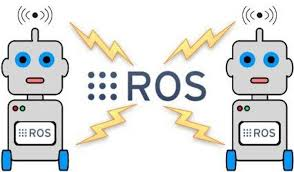

Exercises and Projects
To support the learning process, several exercises and projects are available in addition to those included in the tutorials.
MoveIt Tutorials
ROS Exercises

Project 1 - Forward Kinematics with UR5
To support the learning process, several exercises and projects are available in addition to those included in the tutorials.